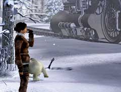
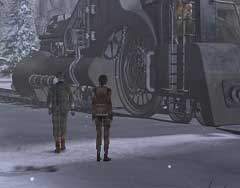

| 概要 | 地図 |
| 淡いヒント集 | ヒント集 | 的確なヒント集 |
| 攻略最短ルート |
| 場所選択に戻る |
雪山

飛行機の墜落現場へ戻ると、ボリスが目覚めているだろう。 彼に事情を話すと、飛行機の緊急脱出装置を使うように教えてくれる。緊急脱出装置は、どのように使うのだろうか? 
座標を入力して、ボタンを押せば装置は作動する。しかし、座標はどこで調べられるだろうか? あなたがかつて見た光景を思い出して欲しい。無線を使った場所に、レーダーがあったはずだ。あれをうまく利用しよう。 
レーダーを調べると、機関車の位置が反応しているはずだ。この点の位置を入力すればよい。レーダーの画面中央が、あなたのいる位置ではないことに注意して欲しい。画面の右上があなたのいる位置となっているのだ。

緊急脱出装置を使い、機関車のそばへ移動したあなたは、オスカーを探さなければならない。なぜなら、彼以外に機関車を操縦できる者はいないからだ。 彼はどこにいるだろうか? 上の画像をよく見ると、答えが分かるだろう。雪原に何かが飛び出している。

オスカーを見つけだしても、彼はまだ万全ではない。彼を正常に戻すにはどうしたらよいだろうか。カラクリ人形は、ゼンマイとオイルが命である。機関車内で、オイルを探してみよう。 |
| 場所選択に戻る |
| 概要 | 地図 |
| 淡いヒント集 | ヒント集 | 的確なヒント集 |
| 攻略最短ルート |
Syberia II
| 目次へ戻る | ページの上部へ |